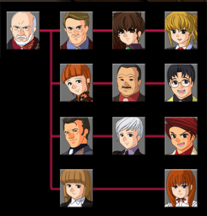
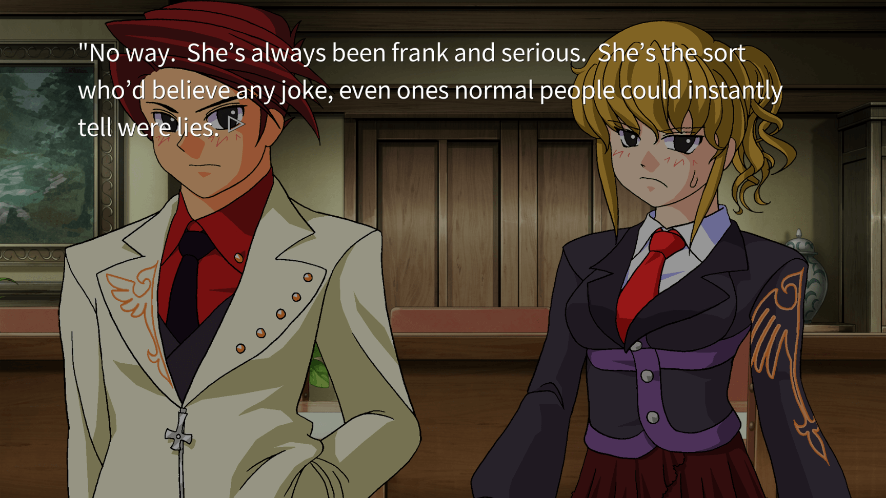
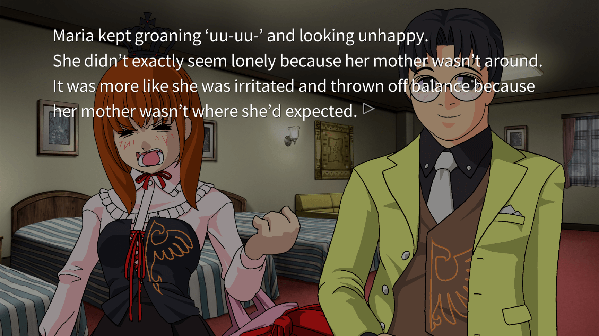
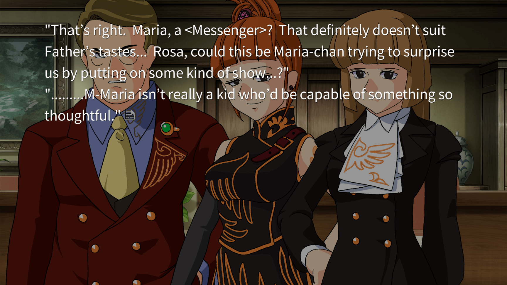
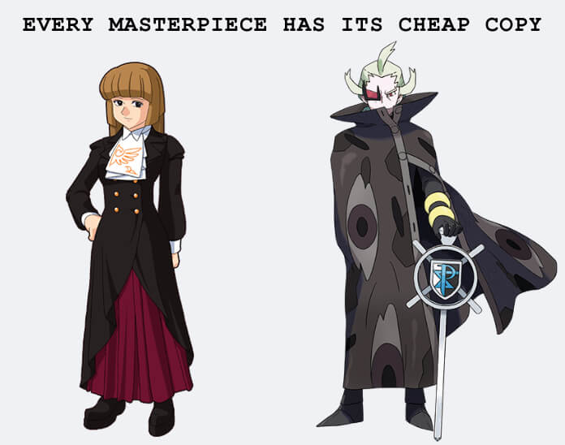

Umineko EP1 Thoughts
Content Warnings
Mentions of Japanese imperialism. Adults being ableist towards autistic children; physical child abuse.
I haven’t touched Umineko since watching the anime in 2009, when I was 12 years old. With Ryukishi07 writing the upcoming Silent Hill, I wanted to get reacquainted with his works. (I forgot and/or misremembered most of the series.) Not to mention that the Studio Deen anime cuts a lot of important details for the sake of making a watchable TV show. These adaptations were created to bring attention to the originals, not to be a good standalone experience.
Our main character, Battler Ushiromiya, is the grandson of a most vile person – a billionaire. From the ages of 12 - 18, Battler cut ties with his relatives and lived with his mother’s side of the family. After their passing, he decides to reunite with the the Ushiromiyas at their yearly family conference on their private island. (Yeah. I know.) He doesn’t care about discussing inheritance or business plans. He just wants to give his relatives another chance.

There are a lot of unfunny and raunchy jokes you must fight through to get to the main plot. I had low expectations, so I was pleasantly shocked at how smart the writer is when he gets serious. As an inexperienced and uneducated middle-schooler, everything Ryukishi07 had to say about Japanese imperialism flew over my head. The progenitor of the family, Kinzo Ushiromiya, became rich after befriending the occupying forces during WWII and taking advantage of the Korean War. One of his sons-in-law, Hideyoshi, is named after Toyotomi Hideyoshi, the general who started the invasions of Korea and China in the 1500’s. This is something he likes to brag about.
Of course the family is messed up - their money was made in an extremely reprehensible way, even ignoring the witchcraft aspect.
The heir apparent, Jessica, is glad Kinzo became a shut-in, because when he was still interacting with the family, he would “beat his children with a wooden sword”, and even though she is only his granddaughter, he once hit her on the buttocks with it… and then I realized she is describing spanking. It’s not a wooden sword so much as a spanking paddle. (Sidebar: this gave me distinct flashback to my family’s paddle, which even had the “spare the rod, spoil the child” verse written on it.)
They are all so disgusting, but so entertaining to watch. I like that Krauss is horrible with money but is somehow smarter than all his siblings and their spouses combined. I like that Natsuhi is chased out of the conference happening in her own home because she isn’t blood-related to Kinzo. I like that Rudolf doesn’t let Kyrie speak at all, but also doesn’t let her leave the conversation. I like that Rosa is only acknowledged whenever the other siblings are fighting, and they need backup. I like that Eva is comically aggravating, but compared to her siblings, she is the nicest parent. The bar is in the dirt.
Now, I don’t know how I missed this next detail, but the youngest grandchild, Maria, is all-but stated to have autism. I was diagnosed as autistic before watching the anime, but it was either not portrayed in the short 26-episode run, or I wasn’t educated enough to notice the symptoms.
According to Jessica, the two types of people are Normal and Maria.
George tries to comfort Maria after her routine is thrown off balance.
Maria has echolalia. She takes everything literally. She is hyperfixated on ancient witchcraft. She gets upset when her routines or plans are broken. She is unsociable to the point that the rest of the family is shocked that Battler likes her. Even when she is happy, she is always doing what can only be described as the autism stare. In private, Kinzo calls her expression “obscene to look at,” and at that point, I had to step away from the computer because it was hitting too close to home. Jessica thinks Maria is creepy, and George gets praised by the rest of the family for the horrible burden of… patiently hanging out with her every time the families meet up. None of the aunts can watch them interact without mentioning his amazing potential as a caretaker for children, because surely George must be a saint to handle her.
Rosa: "Maria isn't really a kid who'd be capable of something so thoughtful."
Then we get to a scene I remember very clearly. Aunt Rosa beats Maria right in front of the cousins, and it barely gets a reaction out of Jessica and George. I wanted to explain this away as some sort of fear response. Maybe they know that the Ushiromiyas aren’t above hitting other people’s kids, based on Kinzo spanking Jessica, and they stay out of the way for their own safety. Maybe they can tell that Rosa is a person who becomes exceedingly cruel when given authority over others, and as their aunt, she has authority over them.
No, that’s giving them too much credit. As the murder-contract starts playing out, Jessica and George stop masking their attitude towards Maria. Everyone keeps trying to convince Battler that he doesn’t actually like her. They say he’s tolerating her. He only thinks her echolalia is cute because she’s 9-years-old. He doesn’t get exhausted by her because he hasn’t seen her for six years. I hate this entire family so much but I’m having the time of my life reading about them.
12-year-old Hannah’s favorite characters were Battler, Beatrice, and Eva-Beatrice. It seems I have grown to have apocalyptically bad taste, because my favorite character this time around is Rosa.
We interrupt this post to take a detour through the Pokemon games.
Hearing about Rosa and her bad parenting was my other reason for buying Umineko. I thought Rosa and Maria’s story would satisfy the part of my brain that was expecting more out of Ghetsis and N. I replayed BW a few months ago and I enjoyed all of Team Plasma. Yes, even Ghetsis. Even after reading Pokespe and watching a playthrough of BW2 (I’m not paying $120 on the resale market). I didn’t bother with the sequels or the manga when they first released over a decade ago, but fans I met online and irl kept urging me to do so. From the way they talked about Gen V, I was expecting Rosa Umineko levels of writing. I do think Ghetsis is a monster, don’t get me wrong. It’s just that considering my own experience with abuse, and after reading Umineko, which explores in-family ableism more thoroughly… in my honest opinion he really is not all that crazy.
That is to be expected. Pokemon is a series made to sell merch of magical animals, and obviously will not give much focus to its human characters. I’m not saying children’s media can’t explore heavy topics. Encanto is super popular with kids, and the backstory is that the family has unresolved trauma after surviving the Colombian Civil War.
What I’m saying is that Umineko is 1.1mil+ words and released by an indie dev. Ryukishi07 burned it onto a bunch of CDs and sold it at Comiket without needing a publisher’s approval. The story I’ve been looking for: what happens when a person who should not be entrusted with kids, especially neurodivergent kids, is given complete and unchecked authority over them? I was never going to find this in a game made for the nintendo DS. I’m disappointed in myself for spending all this time theorizing about the Harmonias and reading between the lines when Umineko was waiting for me. Indie media will always have more storytelling leeway than a big corporation. I don’t know what possessed me to look for a detailed story of ableist parenting in the Pocket Monsters franchise.
tl;dr ROSA SWEEP
I read EP1 in three days, then read the Tea Party and ???? sections after realizing they weren’t optional. In Higurashi, these interludes weren’t necessary to go forward, but for Umineko, they might as well be part of the EP proper. To my surprise, there’s a bit of gameplay in these sections! I had been treating my experience as an eBook, but it’s more like Disco Elysium with waaay less interaction. I am also pleased to say that EP1 is the third longest of the episodes. If I can handle it, I can handle the rest of the game. Though I will say, I don’t think it’s healthy for my mental state if I read it this quickly. I’ve made it a rule that I can’t move on in the game until I post one of these writeups.